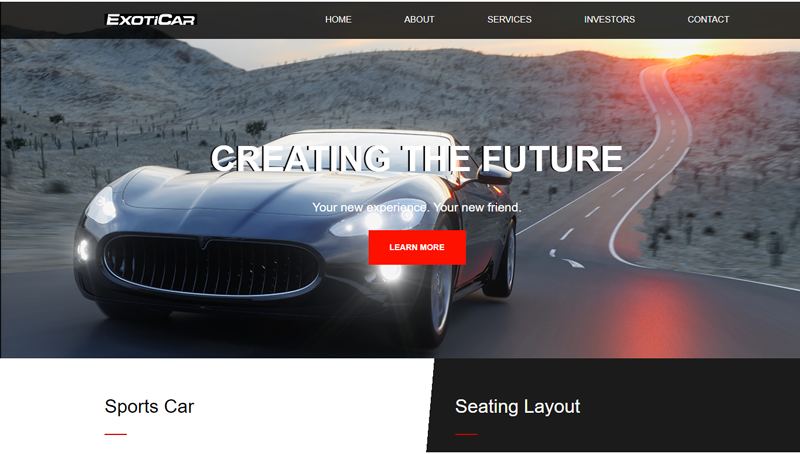

Exoticar
Exoticar is a personal project that I created to hone my design, HTML, and CSS skills. I wanted to practice different layouts and learn hover effects. I also wanted to gain experience hosting sites on GitHub Pages as a free hosting method.
The most difficult challenge about this project was deciding how I wanted to structure it. Although I used guidelines online, I changed quite a few aspects of it. There were many times where I found myself stuck and had to Google my way out of a hole.